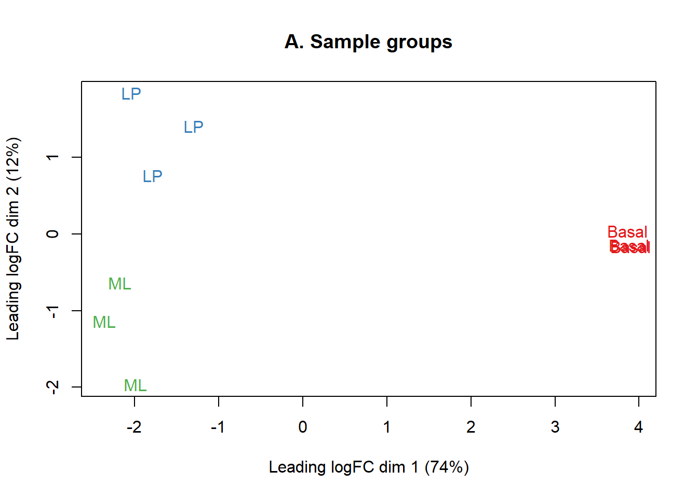
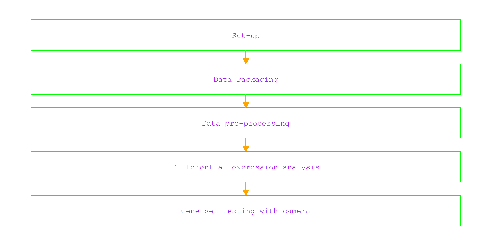
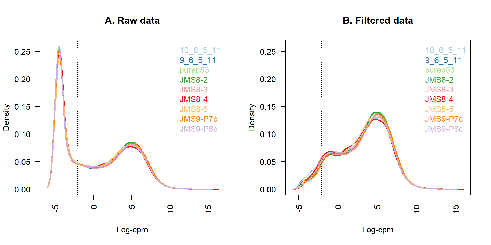
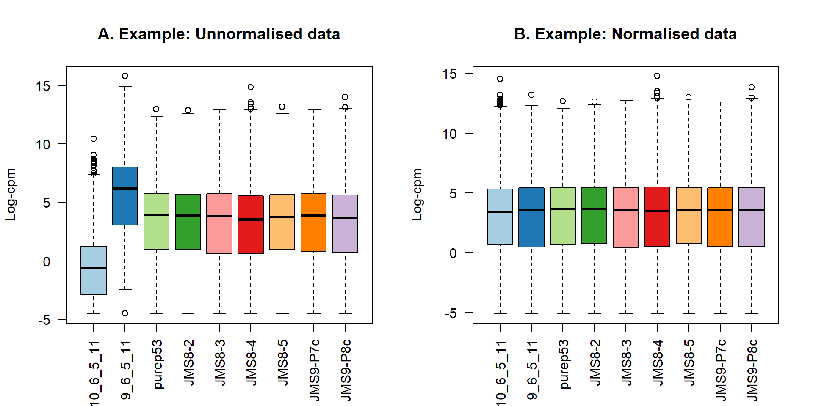
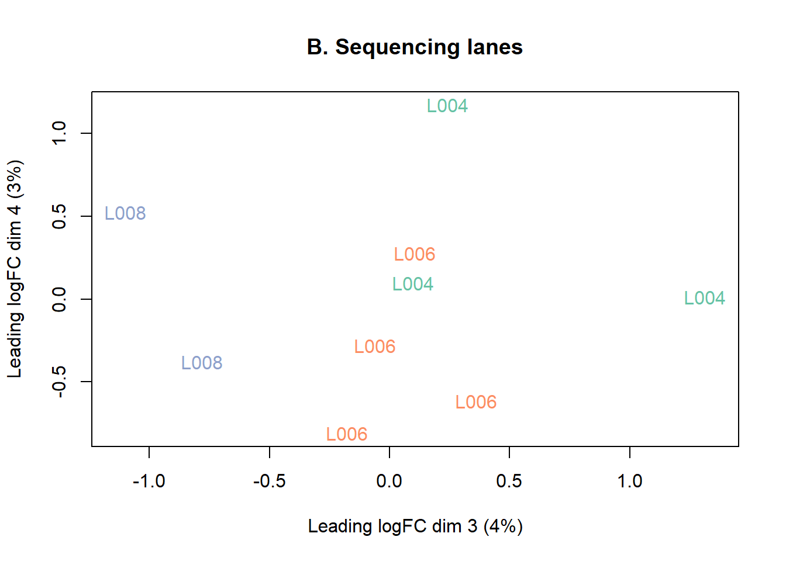
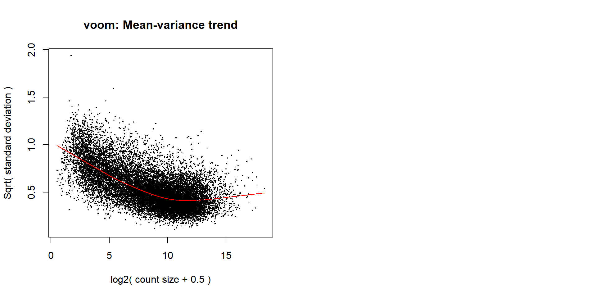
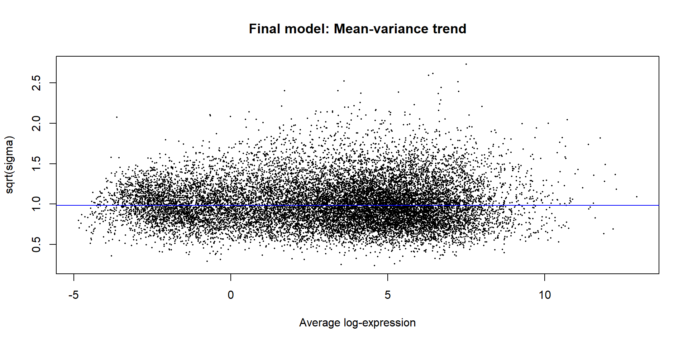
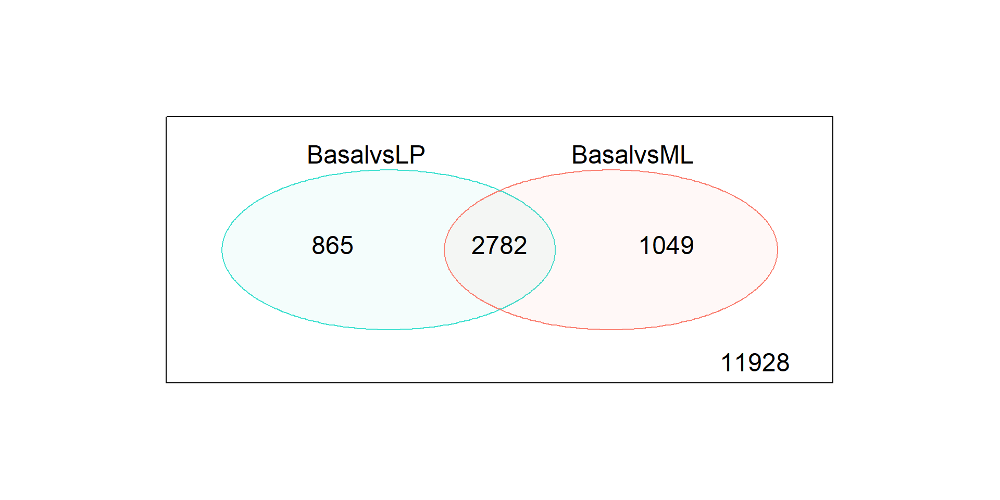
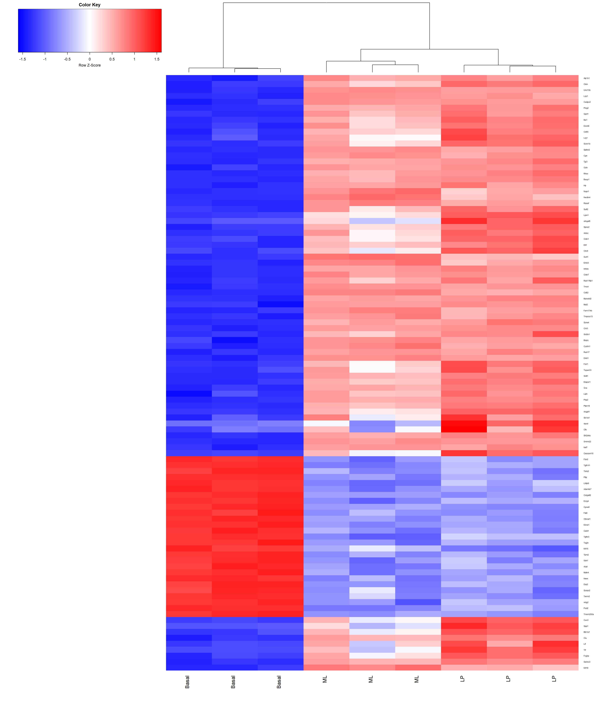

RNA-Seq Analysis with RNAseq123 Workflow
Kate, Jessica, Kardam
Introduction
Goal: Demonstrate the RNAseq123 Bioconductor workflow
Why this dataset?
- Public mouse mammary cell RNA-seq counts from GSE63310
- Includes biologically distinct groups: Basal, LP, and ML
- Small, well-structured example for showing an end-to-end workflow
Introduction
What the workflow covers:
- data packaging
- filtering and normalization
- quality assessment
- differential expression analysis
- visualization and interpretation
Introduction
This presentation is a worked example of how raw count data move through a standard Bioconductor RNA-seq workflow

Experimental Data
“A pooled shRNA screen for regulators of primary mammary stem and progenitor cells identifies roles for Asap1 and Prox1”
This experiment used RNA-seq-based expression profiling in mouse mammary stem cell (MaSC)-enriched basal cells to look for candidate regulatory genes
Mammary stem cells are often used in RNA-seq analyses as they are highly proliferative and have a high capacity for differentiation
Experimental Data
Regulatory genes produce proteins that turn expression on or off and are therefore important target genes for studying cancer as well as other developmental processes
Using retroviral aided knockdown experiments and RNA-seq, the researchers were able to propose that the Asap1 gene is a negative regulator
The gene count file used in this analysis was created by aligning reads with the mouse reference genome using the align function (Rsubread) followed by gene-level summarization using featureCounts
Data Packaging
We started with raw RNA-seq count files from GEO accession GSE63310 and selected 9 samples representing Basal, LP, and ML mammary cell populations
Using edgeR, we combined the individual count files into a single DGEList object, then added sample metadata such as biological group and sequencing lane. We also used Mus.musculus to attach gene annotations, including gene symbols and chromosome information
Data Packaging Overview
- Data packaging converts separate raw files into one structured, analysis-ready dataset
- edgeR: combines the raw count files into a DGEList
- Mus.musculus: adds mouse gene annotations like symbols and chromosome info
- R.utils: unzips the downloaded .gz count files
Data Pre-Processing
- Why data pre-processing?
- Goal is to compare gene expression across groups
- The following steps can be performed to pre-process the data with this workflow:
- Transform raw counts to CPM and log-CPM
- Filter out genes with very low expression
- Normalize libraries using TMM normalization using edgeR
Data Pre-Processing
- Once raw counts were transformed to CPM and log-CPM, lowly expressed genes can be filtered out

Data Pre-Processing
- Normalization of the libraries using TMM normalization with edgeR

Data Pre-Processing
- MDS plots are used to check whether samples clustered by biology rather than technical artifacts
plotMDS()from limma is used as an unsupervised quality control step- This preprocessing step reduces noise, improves comparability across samples, and helps confirm that the data are ready for differential expression testing
Data Pre-Processing
- MDS plots show samples cluster by biological group (Basal, LP, ML) and not by sequencing lane
- This suggests the main signal is biological and technical effects are limited

Data Pre-Processing Overview
- Preprocessing removes uninformative genes, corrects library-size effects, and checks overall sample quality before modeling
- Primarily performed with edgeR, and limma is used for QC
Differential Gene Analysis
- To determine which genes are expressed at different levels between three cell population profiled
- linear model fitting (assuming normally distributed data)
- Intercept act as anchor point for comparision against baseline
- Without intercept, absolute expression levels can be determined
Basal LP ML laneL006 laneL008
1 0 1 0 0 0
2 0 0 1 0 0
3 1 0 0 0 0
4 1 0 0 1 0
5 0 0 1 1 0
6 0 1 0 1 0
7 1 0 0 1 0
8 0 0 1 0 1
9 0 1 0 0 1
attr(,"assign")
[1] 1 1 1 2 2
attr(,"contrasts")
attr(,"contrasts")$group
[1] "contr.treatment"
attr(,"contrasts")$lane
[1] "contr.treatment"Differential Gene Analysis
makecontrast()function from limma package allows user to draw contrast matrix for pairwise comparisionsProvides duplicate correlation to deal with technical replicates
Also provides flexibility to perform interactive studies for ex. testing drug reaction in Lane 6 and Lane 8
Contrasts
Levels BasalvsLP BasalvsML LPvsML
Basal 1 1 0
LP -1 0 1
ML 0 -1 -1
laneL006 0 0 0
laneL008 0 0 0Heteroscedascity and Voom weights
In RNA-seq data, variance changes with the mean expression level (heteroscedasticity), so voom assigns weights to account for this mean-variance relationship.
In RNA-Seq count data, the Negative Binomial distribution assumes quadratic mean-variation relationship
Overdispersion observed due to large difference between house-keeping genes and highly expressed genes
In limma, linear modelling is carried out on log-CPM values
Heteroscedascity and Voom weights
“voom” function act as link to bridge limma(built for microarrays) to expression data. It addresses scale problem (calculates into CPM) and “normalize.method” argument to normalize library size and estimates mean-variance relationship (non-linear - overdispersion)
“Voom weights” fixes the noise related to genes whereas Voomqualityweight addresses the noise generated from inter-sample variation
An object of class "EList"
$genes
ENTREZID SYMBOL TXCHROM
1 497097 Xkr4 chr1
5 20671 Sox17 chr1
6 27395 Mrpl15 chr1
7 18777 Lypla1 chr1
9 21399 Tcea1 chr1
16619 more rows ...
$targets
files group lib.size norm.factors lane
10_6_5_11 GSM1545535_10_6_5_11.txt LP 29387429 0.8943956 L004
9_6_5_11 GSM1545536_9_6_5_11.txt ML 36212498 1.0250186 L004
purep53 GSM1545538_purep53.txt Basal 59771061 1.0459005 L004
JMS8-2 GSM1545539_JMS8-2.txt Basal 53711278 1.0458455 L006
JMS8-3 GSM1545540_JMS8-3.txt ML 77015912 1.0162707 L006
JMS8-4 GSM1545541_JMS8-4.txt LP 55769890 0.9217132 L006
JMS8-5 GSM1545542_JMS8-5.txt Basal 54863512 0.9961959 L006
JMS9-P7c GSM1545544_JMS9-P7c.txt ML 23139691 1.0861026 L008
JMS9-P8c GSM1545545_JMS9-P8c.txt LP 19634459 0.9839203 L008
$E
Samples
Tags 10_6_5_11 9_6_5_11 purep53 JMS8-2 JMS8-3 JMS8-4 JMS8-5
497097 -4.292165 -3.856488 2.5185849 3.2931366 -4.459730 -3.994060 3.2869677
20671 -4.292165 -4.593453 0.3560126 -0.4073032 -1.200995 -1.943434 0.8442767
27395 3.876089 4.413107 4.5170045 4.5617546 4.344401 3.786363 3.8990635
18777 4.708774 5.571872 5.3964008 5.1623650 5.649355 5.081611 5.0602470
21399 4.785541 4.754537 5.3703795 5.1220551 4.869586 4.943840 5.1384776
Samples
Tags JMS9-P7c JMS9-P8c
497097 -3.2103696 -5.295316
20671 -0.3228444 -1.207853
27395 4.3396075 4.124644
18777 5.7513694 5.142436
21399 5.0308985 4.979644
16619 more rows ...
$weights
[,1] [,2] [,3] [,4] [,5] [,6] [,7]
[1,] 1.031010 1.282577 20.143626 20.598915 1.950799 1.345475 20.825144
[2,] 1.120826 1.406203 4.930805 8.761051 3.645647 2.601377 8.862788
[3,] 20.543645 26.132254 31.033311 29.121837 31.978075 26.308447 29.316218
[4,] 27.548060 33.178993 34.343505 33.948156 34.797458 33.021348 34.057882
[5,] 27.203566 29.095135 34.416318 33.920517 34.332254 32.649789 34.030131
[,8] [,9]
[1,] 1.058972 1.031010
[2,] 3.214078 2.513545
[3,] 21.548697 16.889080
[4,] 30.944851 24.744809
[5,] 25.707167 24.020893
16619 more rows ...
$design
Basal LP ML laneL006 laneL008
1 0 1 0 0 0
2 0 0 1 0 0
3 1 0 0 0 0
4 1 0 0 1 0
5 0 0 1 1 0
6 0 1 0 1 0
7 1 0 0 1 0
8 0 0 1 0 1
9 0 1 0 0 1
attr(,"assign")
[1] 1 1 1 2 2
attr(,"contrasts")
attr(,"contrasts")$group
[1] "contr.treatment"
attr(,"contrasts")$lane
[1] "contr.treatment"
$span
[1] 0.4010438

Means (x-axis) and variances (y-axis) of each gene are plotted to show the dependence between the two before voom is applied to the data (left panel) and how the trend is removed after voom precision weights are applied to the data (right panel)
Examining Differentially Expressed Genes:
Summary of Differentially expressed gene:
BasalvsLP BasalvsML LPvsML
Down 4646 4936 3141
NotSig 7118 7008 10953
Up 4860 4680 2530Treat method - Method can be applied for stricter definition on significance based on t-statistics. This allows user to define a log-FC threshold
BasalvsLP BasalvsML LPvsML
Down 1633 1777 223
NotSig 12977 12793 16211
Up 2014 2054 190Extracting DE genes:
[1] 2782 [1] "Xkr4" "Rgs20" "Cpa6" "A830018L16Rik"
[5] "Sulf1" "Eya1" "Msc" "Sbspon"
[9] "Pi15" "Crispld1" "Kcnq5" "Rims1"
[13] "Khdrbs2" "Ptpn18" "Prss39" "Arhgef4"
[17] "Cnga3" "Cracdl" "Aff3" "Npas2" - O - represents genes with levels unchanged
- 1 - Up regulated genes
- 1 - Down regulated genes
Extracting DE genes:
Venn diagram showing the number of genes DE in the comparison between basal versus LP only (left), basal versus ML only (right), and the number of genes that are DE in both comparisons (center)
The number of genes that are not DE in either comparison are marked in the bottom-right

Ranking Differentially Expressed Genes
topTreat()andtopTable()are used to list the top differentially expressed genes fromtreat()andeBayes()results, respectivelytopTreat()ranks genes by statistical significance and reports values such as log-FC, average log-CPM, moderated t-statistics, and raw and adjusted p-values for each gene- setting n = Inf returns all genes in the results table
ENTREZID SYMBOL TXCHROM logFC AveExpr t P.Value
12759 12759 Clu chr14 -5.456559 8.856581 -32.88053 1.983630e-10
53624 53624 Cldn7 chr11 -5.528781 6.295437 -31.93142 2.535109e-10
242505 242505 Rasef chr4 -5.935277 5.118259 -31.36803 2.970972e-10
67451 67451 Pkp2 chr16 -5.739040 4.419170 -29.92286 4.372689e-10
228543 228543 Rhov chr2 -6.266432 5.485314 -29.08206 5.620164e-10
70350 70350 Basp1 chr15 -6.086556 5.247023 -28.23497 7.146411e-10
adj.P.Val
12759 1.646315e-06
53624 1.646315e-06
242505 1.646315e-06
67451 1.672259e-06
228543 1.672259e-06
70350 1.672259e-06Useful Graphical Representations of Differential Expression Results
plotMD()from limma summarizes all genes by plotting log-fold change against average log-CPM, with DE genes highlightedglMDPlot()from Glimma adds an interactive MD plot so individual genes can be searched and inspected sample-by-sample
Useful Graphical Representations of Differential Expression Results

Useful Graphical Representations of Differential Expression Results
- A heatmap of the top 100 DE genes shows whether samples cluster by biology and whether related groups share expression patterns
- Focuses on the strongest DE genes and highlights sample clustering by cell type

Camera: Correlation Adjusted MEan RAnk gene set test
The camera (Correlation Adjusted MEan Rank) method compares the DE values of our gene set to the same values of all other gene sets to determine their relative “rank” of importance.
The aggregated gene set data is the c2 gene signatures collection from the Broad Institute’s Molecular Signatures Database (MSigDB).
This method is more of a meta-analysis, not ideal for focused within-experiment testing, but great for exploratory analysis to find candidate genes for further study.
NGenes Direction PValue
LIM_MAMMARY_STEM_CELL_UP 791 Up 1.872243e-18
LIM_MAMMARY_STEM_CELL_DN 683 Down 3.825170e-14
ROSTY_CERVICAL_CANCER_PROLIFERATION_CLUSTER 170 Up 5.181410e-14
LIM_MAMMARY_LUMINAL_PROGENITOR_UP 94 Down 2.659067e-13
SOTIRIOU_BREAST_CANCER_GRADE_1_VS_3_UP 190 Up 4.891258e-13
FDR
LIM_MAMMARY_STEM_CELL_UP 8.846348e-15
LIM_MAMMARY_STEM_CELL_DN 8.160720e-11
ROSTY_CERVICAL_CANCER_PROLIFERATION_CLUSTER 8.160720e-11
LIM_MAMMARY_LUMINAL_PROGENITOR_UP 3.141023e-10
SOTIRIOU_BREAST_CANCER_GRADE_1_VS_3_UP 4.622239e-10Experimental Results
The genes Rasef and Cldn7 were both top DE genes for both the BasalvsLP and BasalvsML comparisons. Rasef has been shown to act as a tumor supressor, while the dysregulation of Cldn7 in either direction is associated with cancer risk and/or progression.
The camera method was used to compare the results from this analysis to an experiment by Lim et al 2010, which used Illumina microarrays to study the same sorted mammory cell populations. The gene signatures from the Lim et al study match those at the top of the list for each of the camera contrasts.
Conclusion:
What interesting things / skills did you learn?
**Skills learned:**- To setup data from web to R/positron.
- To organize multiple files into single matrix using only one function from edgeR package.
- Organizing gene info and annotations.
- Filtering genes that holds biological importance.
- Unsupervised clustering of samples.
- Designing model and contrast matrices.
Conclusion:
Interesting points learned:
filtering data improves the scopes of visualization.
filterByexp function that removes the genes with low expression values. However, it does not filter the control whose expression value could be near 0 or 0.
calcNormfactor using TMM function works on logic where over & under expressed genes are ignored initially to plot a baseline. Once the baseline is plotted, the genes are cross-references for accurate comparison to avoid the compositional bias.
Heteroscedascity must be addressed to get results at actuals.
Stricter log-CPM values can be applied for sophisticated studies.
Methods like camera can be used to do small-scale “meta-analyses”.
Conclusion:
** What challenges did you come across? **
Several plots had to be resized to render properly.
Communicating effectively so that we did not overwrite each other’s work on the github page.
BioConductor downtime.